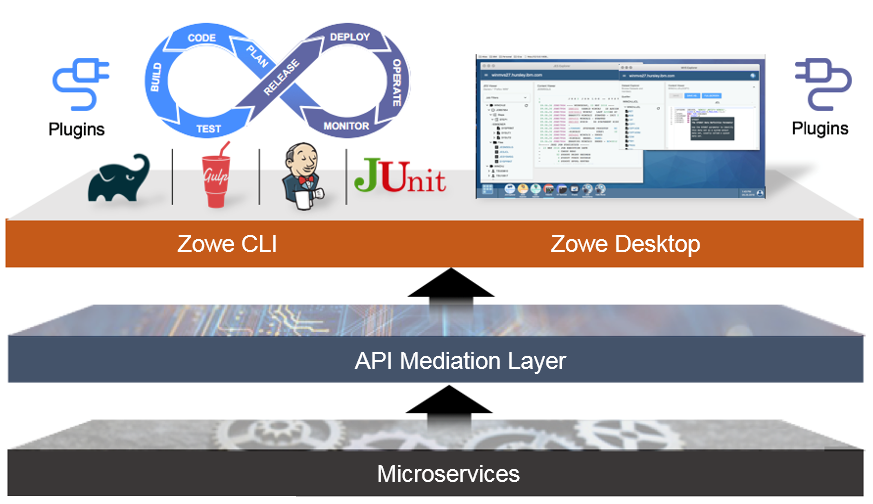

Overview
Zowe offers modern interfaces that enables you to interact with z/OS in a way that is similar to what you experience on cloud platforms today. Like Mac or Windows, Zowe comes with a set of APIs and OS capabilities that applications build on and includes some applications out of the box.
This scenario walks you through the Zowe interfaces including the Zowe Desktop and Zowe CLI through several simple tasks to help you get familiar with Zowe.
- If you are new to Zowe, start with this scenario to explore the base Zowe features and functions.
- If you are already familiar with Zowe interfaces and capabilities, you can skip this scenario and directly go to the Extending Zowe scenario which guides you to extend Zowe by creating your own APIs and applications.
This scenario guides you through the steps in roughly 30 minutes. By the end of the session,
you’ll know how to:
- Log in to the Zowe Desktop
- View and edit data sets by using the MVS Explorer
- Query jobs with filters and view the related status by using the JES Explorer
- View jobs by using TN3270 in the Zowe Desktop
- Edit data sets and upload to mainframe by using Zowe Command Line Interface (CLI)
As an introductory scenario, no previous knowledge of Zowe is needed. Please wait a moment while your development environment loads (this takes a minute or so). When it loads, get started by logging in to the Zowe Desktop.